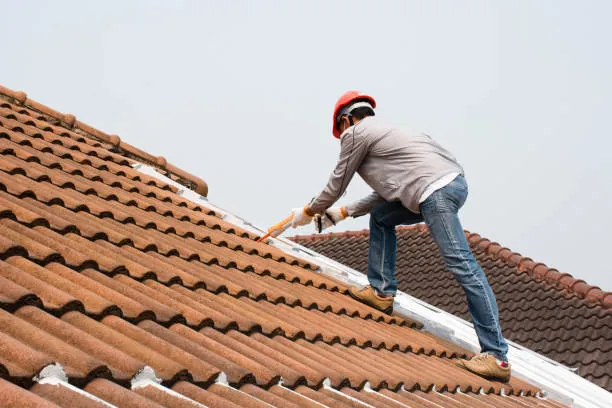
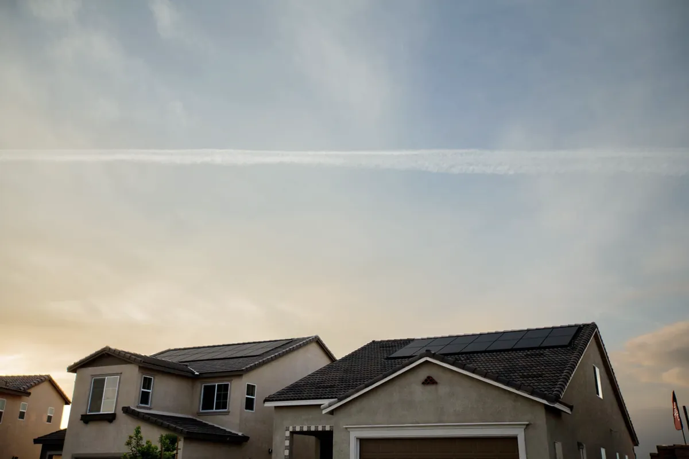
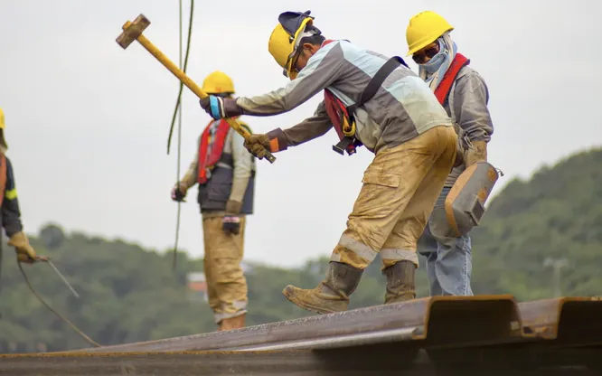

Le toit de la maison est souvent sous-estimé par le propriétaire. Et pourtant, il est l’élément le plus important de votre résidence.
Souvent soumis aux intempéries, il protège votre maison et optimise la température de votre habitat.
C’est pourquoi il faut régulièrement vérifier son état, et si ce dernier est mauvais, en étudier les dégâts et opter pour la méthode de rénovation la plus adaptée.
Nous nous intéresserons dans cet article aux toitures en tuiles.
Pourquoi rénover votre toiture
Vous l’aurez compris, il est indispensable de ne pas négliger la toiture de votre maison.
Fuites d’eau, infiltrations, tâches au plafond, mauvaises odeurs, sont des signes avant-coureurs de gros dégâts. Cela signifie que votre toiture n’est plus étanche.
Si ces dégâts ne sont pas réparés à temps, que vous les laissez tels quels, les conséquences peuvent être très lourdes.
Effectivement, les problèmes de couvertures peuvent engendrer de gros dégâts comme la dégradation de votre intérieur.
Mais pas que ! De petits rongeurs peuvent s’incruster dans votre toiture et vous pousser à réaliser de gros travaux...
Mais avant tout, le toit joue énormément sur votre confort.
Et oui, il est celui qui régularise la température de votre logement et s’il est en mauvais état, vous pouvez être certain de surconsommer en énergie.
On ne s’en rend pas forcément compte, mais beaucoup de désagréments proviennent de la toiture.
C’est pourquoi il est indispensable de la vérifier annuellement.

La couverture
Si vous constatez des dégâts chez vous, votre couverture peut être simplement abîmée.
Il arrive que certaines tuiles éclatent ou se fissurent à cause des variations de température.
En premiers signes, vous pouvez remarquer :
- des traces d’humidité au plafond
- ressentir de l’humidité dans l’isolant et les combles
- avoir des fuites d’eau.
Pour régler ce problème, la méthode est simple : il faut commencer par remplacer les tuiles abîmées de votre toiture, par des nouvelles. Cela redonnera son étanchéité au toit !
Malheureusement, il y a des cas où la dégradation est bien plus dense, et bien plus complexe.
En effet, il est tout à fait possible aussi, dans les cas les plus extrêmes, que votre couverture soit totalement HS.
Dans le cas où le problème est plus étendu, il faudra remplacer la couverture complète.
Rénover sa toiture n’est pas si simple, évitons de prendre un risque de plus en montant sur son toit, sans compétences...
Mais pour ça pas d'inquiétude ! Il existe des professionnels qualifiés qui ont les capacités nécessaires pour s’en charger à votre place !
La rénovation totale
Quand la totalité de la toiture est très abîmée, le remplacement de la couverture est susceptible de ne pas suffire.
Il faudra donc réaliser une réfection totale de la toiture. Cette opération peut englober l’isolation par l’extérieur et la pose d’un écran sous toiture..
Cela permettra de s’assurer de l'étanchéité qui est indispensable.
Dans le pire des cas, il faudra rénover la charpente en plus de la réfection de la toiture avec isolation.
Il pourrait s’agir de la traiter, la remplacer entièrement ou partiellement.
Cette méthode de rénovation reste la meilleure solution. L’isolation par l’extérieur est la meilleure technique en termes d’isolation thermique et phonique.
Pour rentabiliser votre rénovation totale, il est important de profiter de ces travaux pour y ajouter un écran sous toiture.

Comment choisir la méthode de rénovation pour son toit ?
Après avoir vu ensemble les différentes techniques de rénovation pour votre toiture, il est maintenant temps de savoir laquelle choisir.
Pour cela, il faut simplement étudier l’état de votre toit.
Tout va dépendre de son âge, l’état de son matériau, et des dégâts engendrés par tous types de phénomènes.
C’est de cette façon que vous allez pouvoir vous décider de quelle méthode adopter.
Si c’est uniquement une partie de la toiture qui est abîmée, il faudra alors prévoir une réparation partielle de cette dernière, et donc opter pour de légers travaux.
Si l’ensemble des tuiles sont abîmées, prévoyez un remplacement de la couverture.
Et si les dégâts sont bien plus gros, que les tuiles et l’isolation sont à refaire, il faudra prévoir des travaux plus conséquents : une réfection complète avec isolation.
Pour conclure, la meilleure solution reste de faire réaliser un diagnostic complet de la charpente et de la couverture.
Comme dit précédemment, il est indispensable de se faire accompagner pour ce type de travaux par des professionnels de qualité, et de confiance.